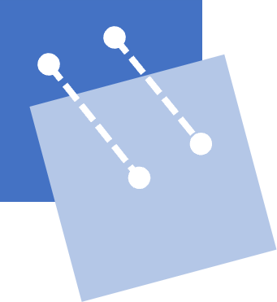

RAMAC 
ramac
RAMAC
Index
Index
A
|
C
|
D
|
E
|
F
|
I
|
M
|
N
|
O
|
P
|
R
|
S
|
T
|
U
|
V
A
applied_transform() (in module ramac.utils)
apply_rotation_and_translation() (in module ramac.utils)
C
compare_slices_interactive() (in module ramac.plots)
create_final_dataframe_timepoints() (in module ramac.correspondence_csv_input)
create_phantom_shepplogan() (in module ramac.input_transform)
create_transformed_dataframe() (in module ramac.transform_coordinates)
D
display_images() (in module ramac.registration)
display_images_with_alpha() (in module ramac.registration)
E
end_plot() (in module ramac.registration)
F
find_corresponding_lesions_timepoints() (in module ramac.correspondence_csv_input)
I
insert_lesion() (in module ramac.utils)
M
mask_air() (in module ramac.preprocessing)
merge_indices() (in module ramac.merge_dataframe)
module
ramac
ramac.correspondence_csv_input
ramac.input_transform
ramac.merge_dataframe
ramac.plots
ramac.preprocessing
ramac.registration
ramac.transform_coordinates
ramac.utils
N
numpy_array_to_sitk() (in module ramac.utils)
numpy_point_to_sitk() (in module ramac.utils)
numpy_points_to_sitk() (in module ramac.utils)
O
ordinal() (in module ramac.plots)
P
plot_lesion_correspondences_timepoints() (in module ramac.correspondence_csv_input)
plot_lesions() (in module ramac.plots)
plot_slices_interactive() (in module ramac.plots)
plot_values() (in module ramac.registration)
process_lesion_timepoints() (in module ramac.correspondence_csv_input)
R
ramac
module
ramac.correspondence_csv_input
module
ramac.input_transform
module
ramac.merge_dataframe
module
ramac.plots
module
ramac.preprocessing
module
ramac.registration
module
ramac.transform_coordinates
module
ramac.utils
module
read_lesion_csv() (in module ramac.correspondence_csv_input)
(in module ramac.transform_coordinates)
registration_3d_rigid_gradient_descent() (in module ramac.registration)
registration_3d_rigid_series() (in module ramac.registration)
rotation_matrix() (in module ramac.utils)
round_coordinates_to_integer() (in module ramac.utils)
S
save_lesion_coordinates() (in module ramac.utils)
save_transformed_dataframe() (in module ramac.utils)
start_plot() (in module ramac.registration)
T
transform_centroid() (in module ramac.transform_coordinates)
transform_phantom() (in module ramac.input_transform)
(in module ramac.utils)
transform_physical_to_index() (in module ramac.transform_coordinates)
U
update_multires_iterations() (in module ramac.registration)
V
voxel_tuples_from_dataframe() (in module ramac.utils)